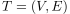
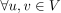
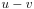
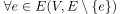
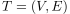
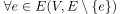

Äquivalente Charakterisierungen eines Baums
1. Satz
Sei  ein Graph. Dann sind folgende Aussagen äquivalent:
 ist ein Baum
ist ein Baum-  existiert genau ein Pfad 
- ist minimal zusammenhängend:  nicht zusammenhängend
- ist maximal kreisfrei:
Sei  ein Graph. Dann sind folgende Aussagen äquivalent:
ist ein Baum ist minimal zusammenhängend:  nicht zusammenhängend ist maximal kreisfrei: